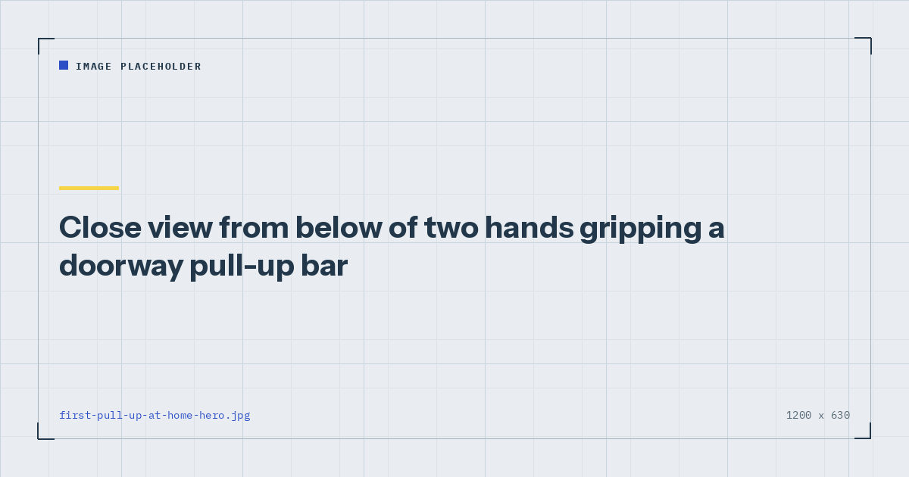

Bodyweight Strength
How to Do Your First Pull-Up at Home
The pull-up is the hardest common bodyweight movement, and the standard advice — just keep trying — is why most people never get one. Here is the actual route.

A pull-up requires lifting your entire bodyweight with your arms and back, through a full range, from a dead hang. There is no lighter version available by default, which is what makes it different from every other bodyweight exercise.
This is the sequence that gets most people there, along with an honest account of how long it takes.
Why pull-ups are so hard
Three reasons compound.
There is no built-in scaling. A push-up can be made easier by raising your hands. A pull-up has no equivalent without equipment — you cannot make yourself lighter.
The muscles involved are rarely trained. Most people arrive with almost no lat or mid-back strength, because ordinary life provides very little pulling.
Bodyweight matters more than for any other movement. This is worth saying plainly rather than tactfully: pull-ups are substantially harder at higher bodyweights, and progress on them is affected by body composition in a way that push-ups are not. That is a mechanical fact, not a judgement.
The route, in five stages
You will need something to hang from. A doorway bar is the usual answer — check the fit and safety guidance in the doorway pull-up bar guide, because not every frame is suitable and a failure at height is a serious matter.
Train pulling two or three times a week, never on consecutive days. Weekly volume is what drives adaptation,1 and this progression takes months, so consistency matters more than intensity in any single session.
Stage 1: dead hang
Hang from the bar with straight arms, shoulders relaxed, feet off the floor. Build to three sets of thirty seconds.
This looks trivial and is not. Grip strength is a genuine limiting factor for many beginners, and hanging also conditions the shoulders and elbows to tolerate the position under load. Skipping it is a common route to elbow irritation later.
Graduate when: three sets of thirty seconds, comfortably.
Stage 2: scapular pulls
From a dead hang, without bending your elbows, pull your shoulder blades down and together so your body rises an inch or two. Hold briefly, lower.
This teaches the initiation that almost everyone gets wrong. A pull-up starts with the shoulder blades, not the arms, and people who never learn this tend to stall permanently with their chin just below the bar.
Graduate when: three sets of eight to ten controlled repetitions.
Stage 3: heavy rows
Build genuine pulling strength horizontally before attempting it vertically. Inverted rows under a table, feet progressively further forward and eventually elevated on a chair, until you can do three sets of twelve with your body horizontal.
This is the stage people skip and the one that does the most work. The full set of options is in rows at home. Expect to spend six to twelve weeks here, and do not treat that as a delay — it is the training.
Graduate when: three sets of twelve horizontal inverted rows with feet elevated.
Stage 4: negatives
Get your chin above the bar by jumping or stepping from a chair, then lower yourself as slowly as you can. Aim for five seconds initially, building toward ten.
You can control considerably more load eccentrically than you can lift, which is what makes negatives the bridge to a full pull-up. Three sets of three to five negatives, twice a week.
These are demanding and produce real soreness at first. Start with three sets of three.
Graduate when: three sets of five negatives lowering over eight seconds or more.
Stage 5: assisted pull-ups
Two options. A resistance band looped over the bar with one foot in it takes a portion of your weight, and you reduce the assistance by moving to lighter bands. Alternatively, place a chair beside you and use one foot to assist as little as possible.
Band assistance is more precise and easier to progress. Chair assistance is free but tends to help more than you intend, because the assisting leg quietly does more work as you fatigue.
Graduate when: you get one unassisted repetition.
A realistic timeline
| Stage | Typical duration |
|---|---|
| Dead hang | 2–4 weeks |
| Scapular pulls | 2–3 weeks |
| Heavy rows | 6–12 weeks |
| Negatives | 4–8 weeks |
| Assisted | 4–8 weeks |
That is roughly four to nine months from a genuine standing start. Some people are faster, particularly if they are lighter or have trained before. Almost nobody does it in six weeks, whatever the internet suggests, and expecting to is the most common reason people abandon the attempt at stage three.
The stage most people skip is heavy rows, and it is the stage that does most of the work.
If you stall
Stuck at the bottom. You cannot initiate the movement at all. Go back to scapular pulls and heavy rows — this is a strength problem in the lats and mid-back.
Stuck halfway. Common and usually a biceps and mid-range strength issue. More negatives, and hold at the sticking point for two or three seconds during the lowering phase.
Stuck just below the bar. Usually a technique issue rather than strength: you are not pulling the shoulder blades down at the start, so you run out of range. Back to scapular pulls.
Elbow pain. Stop and reduce volume. Elbow irritation is common in early pull-up training, usually from doing too much too soon or skipping the hanging stage. Persistent pain warrants a physiotherapist rather than pushing on.
No progress for six weeks. Check sleep and protein before changing the programme. Sleep has documented effects on training performance,2 and progression on a hard movement is one of the first things to stall when it is short.
Where to go next
Build the foundation with rows at home, and see the wider set of options in back exercises with no equipment. For where pulling fits in a week, use the three-day split.
Frequently asked questions
How long does it take to do a pull-up from scratch?
Four to nine months for most people starting with no pulling strength. The largest block of that is spent building horizontal rowing strength, which is the stage people most often skip and the one that does most of the work.
What exercises help you get your first pull-up?
Dead hangs for grip and shoulder conditioning, scapular pulls to learn the initiation, heavy inverted rows to build pulling strength, slow negatives to bridge the gap, and band-assisted pull-ups to close it.
Are negatives good for learning pull-ups?
Yes. You can control substantially more load lowering than lifting, which makes negatives the most direct bridge to a full repetition. Three sets of three to five, twice a week, lowering over five to ten seconds.
Why can I not pull myself past halfway?
Usually a mid-range strength issue. Add more negatives and pause for two or three seconds at the sticking point while lowering. If you are stuck right at the bottom instead, the problem is lat and mid-back strength and you should return to rows.
Do I need a pull-up bar to learn pull-ups?
Something to hang from, yes. A doorway bar is the usual answer, but check that your door frame is suitable first — not all are, and a failure at height is a serious matter.
Why do my elbows hurt when training pull-ups?
Most often from progressing too quickly or skipping the dead hang stage, which conditions the elbows and shoulders to tolerate hanging under load. Reduce volume, and see a physiotherapist if the pain persists.
Sources and further reading
- Schoenfeld BJ, Ogborn D, Krieger JW. “Dose-response relationship between weekly resistance training volume and increases in muscle mass: A systematic review and meta-analysis.” Journal of Sports Sciences, 2017;35(11):1073–1082. PubMed.
- Bonnar D, Bartel K, Kakoschke N, Lang C. “Sleep Interventions Designed to Improve Athletic Performance and Recovery: A Systematic Review of Current Approaches.” Sports Medicine, 2018;48(3):683–703. PubMed.
- Schoenfeld BJ, Ogborn D, Krieger JW. “Effects of Resistance Training Frequency on Measures of Muscle Hypertrophy: A Systematic Review and Meta-Analysis.” Sports Medicine, 2016;46(11):1689–1697. PubMed.
- NHS. Strength and Flex exercise plan.
Comments
Comments are not enabled yet. Add a hosted comment embed (Disqus, Commento, Giscus) inside this container when you are ready.